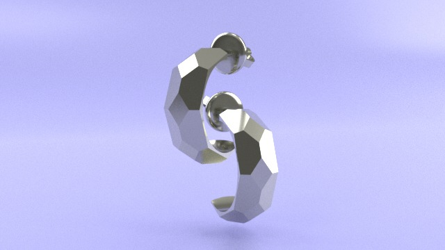
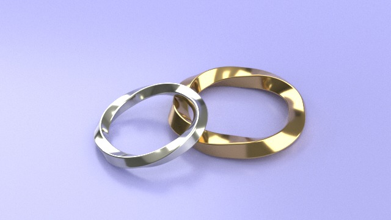
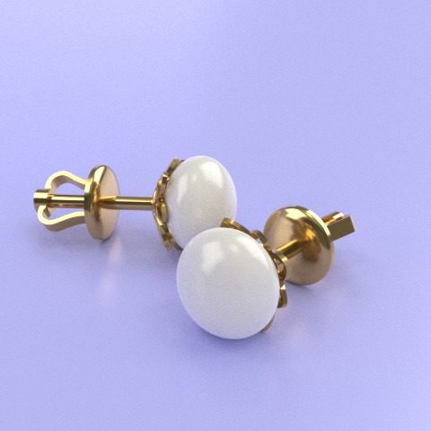
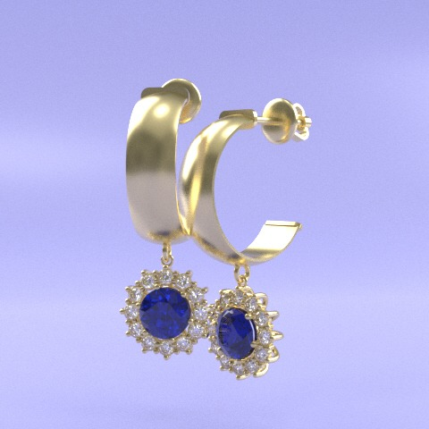

What we do




- A small 3d jewelry and other stuff atelier. Friendly with Nostr
- From traditional craftsmanship to parametric modeling - designing digital objects for the physical world.




add #edit to the URL to edit this page